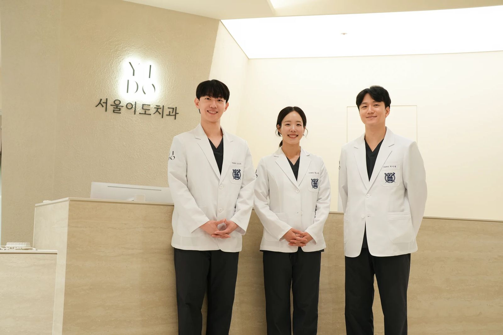

고성민 대표원장
- 관심 진료분야
- 임플란트 수술, 진정치료, 턱관절·구강외과 진료
- 공개 영상 안내 언어
- 영어 · 일본어
의료진의 전문의 자격과 진료분야를 살펴보세요. 내 상태에 맞는 진료와 치료 계획은 상담을 통해 확인할 수 있습니다.



공식 홈페이지 게시 정보 확인 2026.11.04 · 개별 의료진의 진료일과 예약 가능 여부는 병원에 확인해 주세요.
누가 설명했고 누가 내용을 확인했는지, 필요한 정보는 글 안에서 안내합니다.
예약할 때 원하는 의료진과 진료일을 함께 확인해 주세요.